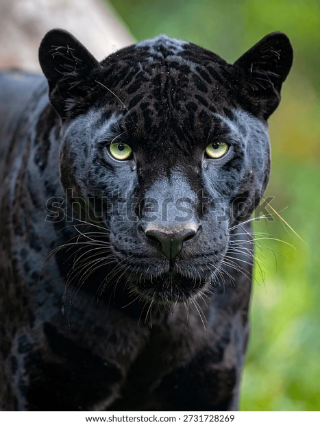

El término pantera no se refiere a una especie animal diferente, sino a los leopardos o jaguares que nacen con pelaje completamente negro debido a una condición genética llamada melanismo. Estos animales conservan sus manchas características en forma de rosetas, aunque solo son visibles bajo la luz directa del sol. Al igual que el resto de su especie, son carnívoros robustos y musculosos; las panteras americanas (jaguares negros) son más grandes y pesadas, superando los 90 kg, mientras que las panteras de África y Asia (leopardos negros) son más ágiles y pesan entre 30 y 65 kg. Tienen sentidos muy aguzados, garras retráctiles y una excelente visión nocturna que los convierte en depredadores letales en la oscuridad. Son felinos estrictamente solitarios y territoriales que destacan por su asombrosa habilidad para trepar árboles y nadar con facilidad. Su hábitat principal son las selvas densas y bosques tropicales húmedos, donde su color oscuro les proporciona el camuflaje perfecto para acechar a sus presas durante la noche.